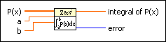

Integral of Polynomial over [a,b] VI
Owning Palette: Polynomial VIs
Requires: Full Development System
Integrates the real polynomial P(x) over the interval a and b define. Integrating a polynomial over an interval [a,b] is the same as calculating the definite integral of the polynomial.

 Add to the block diagram Add to the block diagram |
 Find on the palette Find on the palette |